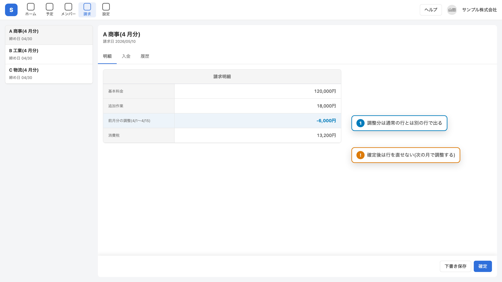

調整を請求明細の 1 行として持つ案を推奨します。決めてほしいのは 2 点です。
履歴を独立して持てる。消込と帳票の両方に合算処理が要る。
既存の合計処理がそのまま使える。行の種類を表す列を 1 つ足す。
| 対象 | 変更 | 工数(日) |
|---|---|---|
invoice_items | item_type 列を追加(regular / adjustment) | 1 |
| 請求画面 | 「調整を登録」ダイアログを追加 | 3 |
| 帳票 | 調整行の表示名を変える | 0.5 |

regular にする調整の理由は選択式でよいですか?
自由入力にすると帳票での集計ができない確定済みの請求への調整を許しますか?
許す場合は再発行の運用が要る